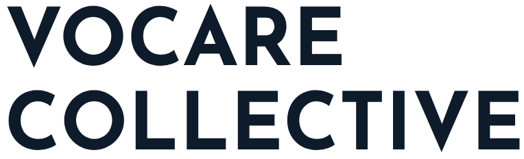

Vocare Collective is a community for early-career tech professionals in the San Francisco Bay Area. We seek to use our Christian faith to shape our work, and the products, cultures, and companies changing our world.
Vocare comes from the Latin word meaning “to call” — it’s the root of our English word vocation, not just a job, but a calling, and purpose. Connected to the Hebrew avodah, which not only means work, but worship. If you join us, what will you be called to?
Building a network for opportunities — housing, jobs, funding, and more.
Close, supportive relationships, mentorship, wise and faithful counsel.
Exposure to great theology, thought-leaders, resources, and tools.
Reflect, set new practices, and take action.
We’re building toward intimate 25-member cohorts that we believe will be a foundational community for building your career, and living out your purpose. We pair this deep community with great theology, tools, and practices that bring your faith to life in your daily work. We know those who root their work, the products and companies they build, and the cultures they nurture in their Christian faith will flourish personally. And we believe at scale, a network of faith-driven leaders have the potential to accelerate redemption and revival in our world.
Join us this year for a preview of the cohort and community experience.
Experience our rich content, commit to take action, and build new connections across a group of like-minded peers.
Learn from faith-driven founders who have nurtured their faith, applied it to strengthen their business, and rooted themselves in God’s call and Word over the noise of Silicon Valley. Discuss what you’ve learned over a meal alongside fellow early career Christians in tech.
Spend a day with the pastors, spiritual directors, marketplace leaders, and mentors of Faith, Work and Tech. We’ll teach the basics of our theology of faith and work with toolkits to apply them and lots of conversation to integrate them into your own walk. We’ll guide a powerful spiritual practice to refresh your faith, enjoy a lunchtime fireside chat, and wrap with a delicious dinner. Everyone receives coaching to help you get unstuck in your current walk and challenges.
Your faith belongs at work, and at Tech Week. Join us for an informal large-scale networking event seeking to turn out as many early-career Christians in Tech in SF as possible over breakfast the Monday of Tech Week. Faith, Work and Tech and Vocare Collective are partnering with Christians*in Tech and several other local faith + work organizations to host this mixer — a chance to see the scale and breadth of folks following Jesus and working for the Kingdom in tech, and to find your community among the organizations supporting your walk of faith and work in the Bay Area.
The application for our founding vocare launch cohort opens October 15, 2026.
Quarterly public events for connection, and to introduce thought-leadership, strong theology of faith and work, and new connections to other Christians building their careers in tech.
Twice-annual overnight retreats to deepen spiritual formation (revive), and help you take your next step as a redemptive worker for the Kingdom (catalyze). Spring 2027 retreats will be limited to vocare launch participants; future retreats will have limited spaces open to the public.
Our flagship 5-month cohort. We’ll invite 25 high-slope professionals in tech to our biweekly IRL program in San Francisco. You’ll receive great teaching, practical tools and resources, top-flight mentors to accelerate your career and your walk with God, spiritual direction, and a community of two dozen others to walk and lead alongside over the next two decades. Each cohort will also have “circles” — smaller groups of 5 for mutual support and encouragement along the journey.
An exclusive Slack group for our launch participants and alumni — your first stop for community, connection, guidance, and support. Private channels for your cohort and your circle, dedicated channels for your craft, leveraging technology with humanity, and spiritual direction led by expert guides. A digital home that is confidential, secure, and supportive, that helps you reconnect in person.